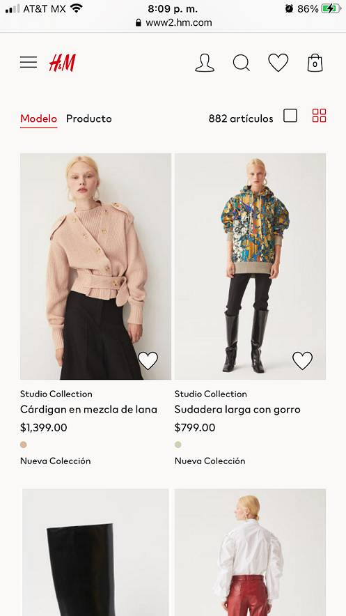

Visual Hierarchy
krispy kreme
krispykreme.comI chose Krispy Kreme because it's a good example of what catches our attention first, in this case is the donut and the offers they have, because clearly they put it bigger and in red. The sizes are different and the prices are small because first they want you look at the food and then the price. The offers are in red and the prices are a little bigger than the normal prices. So we can see what they wanted to highlight in all the website. And personally I would buy the offer!
PARC: Alignment
H&M
H&M.com
I chose H&M to illustrate this concept because I think the alignment is easly to see. The model images, the text and the prices, including the header of the website are perfectly align. I can easly imagine the lines that align the entire website. I think they have a good aligment because the website looks clear, elegant and pleasant to the view. And of course I chose this site because I like the brand.
PARC: Repetition
Little Caesars
little-caesars.comIn the Little Caesars website they repeated the font family just in different colors and sizes. But the colors are the same white and black. They used the color orange in almost all the website because it's the color of the brand but it's easly to see the repetition patterns so that's the reason I chose this website, because I think it's easy to distinguish the repeated elements in it.